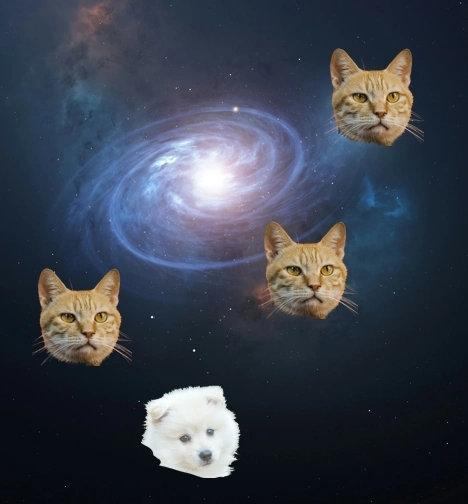

About Me
Hey there! I'm a passionate IT enthusiast from Stockholm, Sweden, with a love for web development and full-stack technologies. I'm driven by curiosity and a genuine excitement for learning new things every day.
Read more
I thrive on challenges, whether it’s solving complex coding problems, pushing my limits in strength training, running, or practicing Brazilian Jiu-Jitsu. I approach life with a blend of discipline, creativity, and a strong commitment to continuous personal growth.
Social by nature, I value meaningful connections and enjoy engaging with others. I believe that collaboration and sharing knowledge are key to both personal and collective success. I’m also passionate about personal development—not just for myself but in helping others grow and reach their full potential as well.
With a humble attitude and an open mind, I’m always excited about the future of technology and the possibilities it brings. I’m particularly interested in merging my knowledge of sports science and IT to create innovative, impactful solutions. Let’s connect and explore how we can collaborate and make a difference together!

Portfolio
-
Message Randomizer
Crafts an inspiring message.
Read more
Finished july 2024.
-
Cat Attack Game
Read more
Released in january 2024.
To develop this program, I utilized my knowledge of JavaScript fundamentals and array manipulation. I structured the code to use arrays for storing different parts of the message, ensuring modularity and flexibility. Understanding randomization in JavaScript allowed me to create a function that selects random elements from each array, ensuring the generation of unique messages each time the function is executed. Additionally, my familiarity with string concatenation enabled me to efficiently combine these elements into coherent, motivational phrases. This project also demonstrates my ability to implement logical workflows, breaking down the task into manageable components that work together to produce the desired outcome.
This project is a web-based game where the player uses arrow keys to dodge falling obstacles. The game increases in difficulty over time as obstacles appear more frequently, and the player's score rises with each passing moment. If the player collides with an obstacle, they lose a life, and the game ends when all lives are lost. The player can restart the game by pressing "R" after a game over. What I Learned Through this project, I enhanced my understanding of object-oriented programming in JavaScript, particularly in organizing code using classes. I also learned how to handle keyboard events for smooth player movement and implemented collision detection to manage interactions between the player and obstacles. Working with the HTML5 Canvas API helped me gain practical experience in 2D game rendering and animation.
Skills
- JavaScript
- HTML
- CSS
- Visual Design
- Degree in Sports Science
Edjucation and Experience
Currently, I’m expanding my skills at Högskolan Väst, where I specialize in HTML, CSS, JavaScript, database systems, and design, including UI/UX. I’m also furthering my knowledge as a full-stack developer at Företagsuniversitetet.
Also, I earned my Bachelor’s degree in Sports Science from Gymnastik- och Idrottshögskolan, blending my interests in sports and human performance. I've been working as a train driver since 2011, with experience across various companies including freight, SJ, MTR, and Stockholm’s commuter trains. More recently, I’ve combined my love for fitness and helping others by becoming a personal trainer.